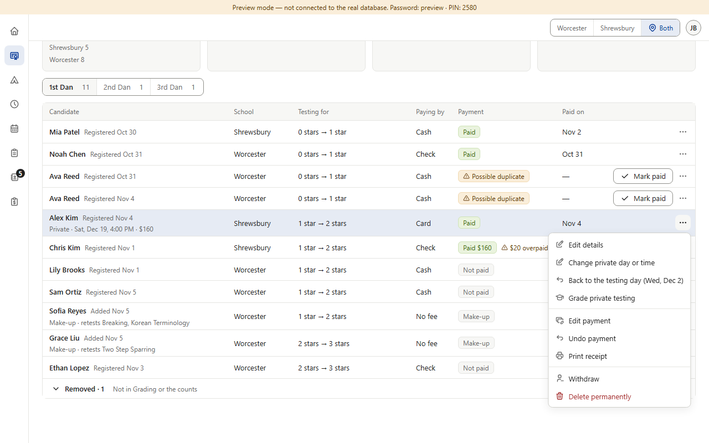
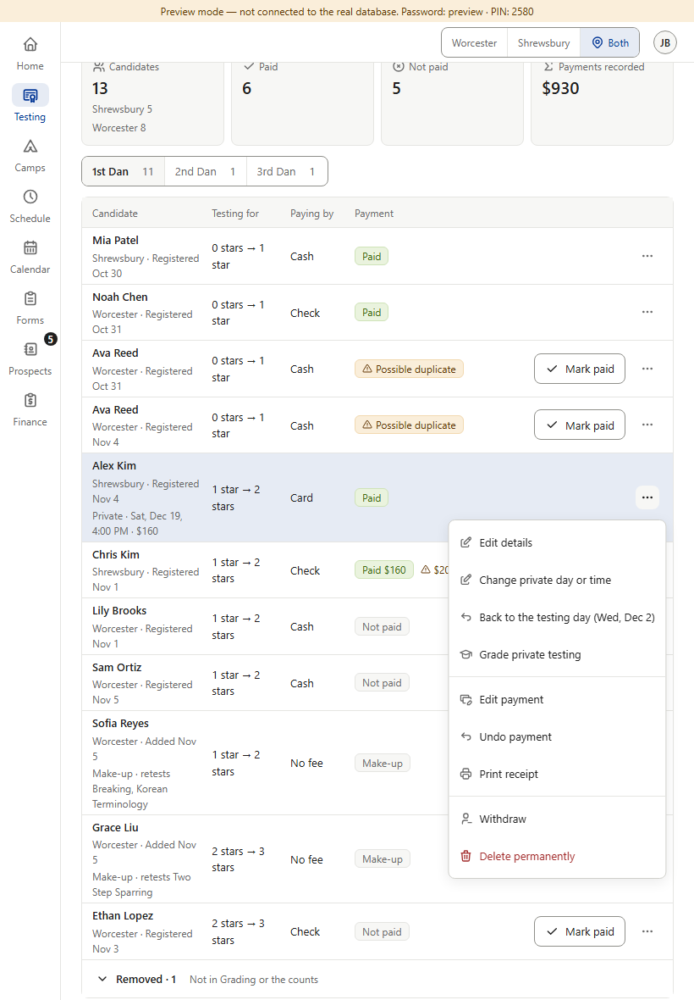
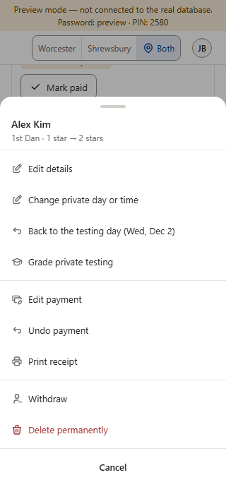
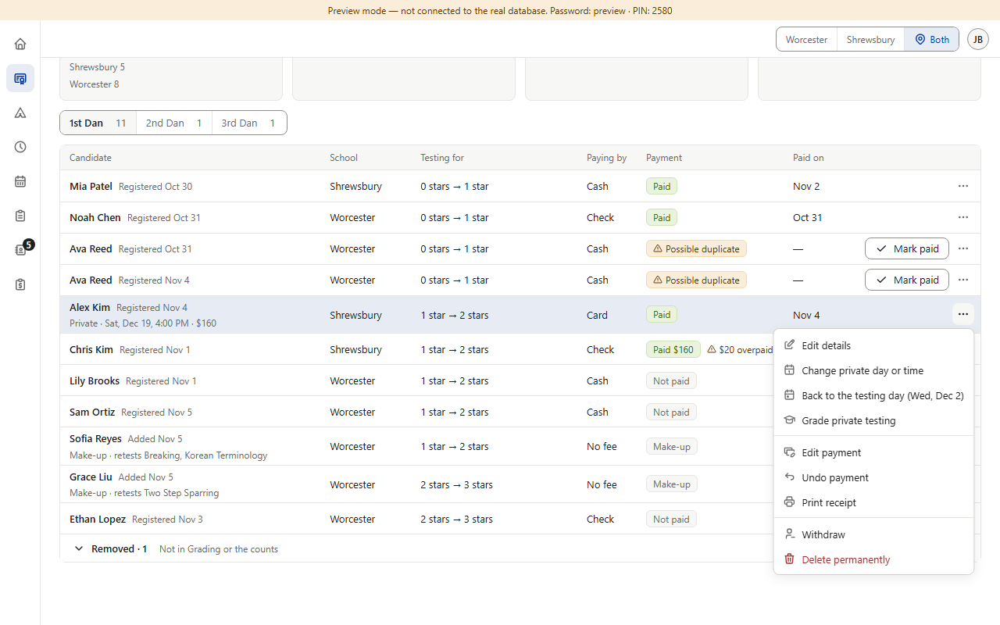
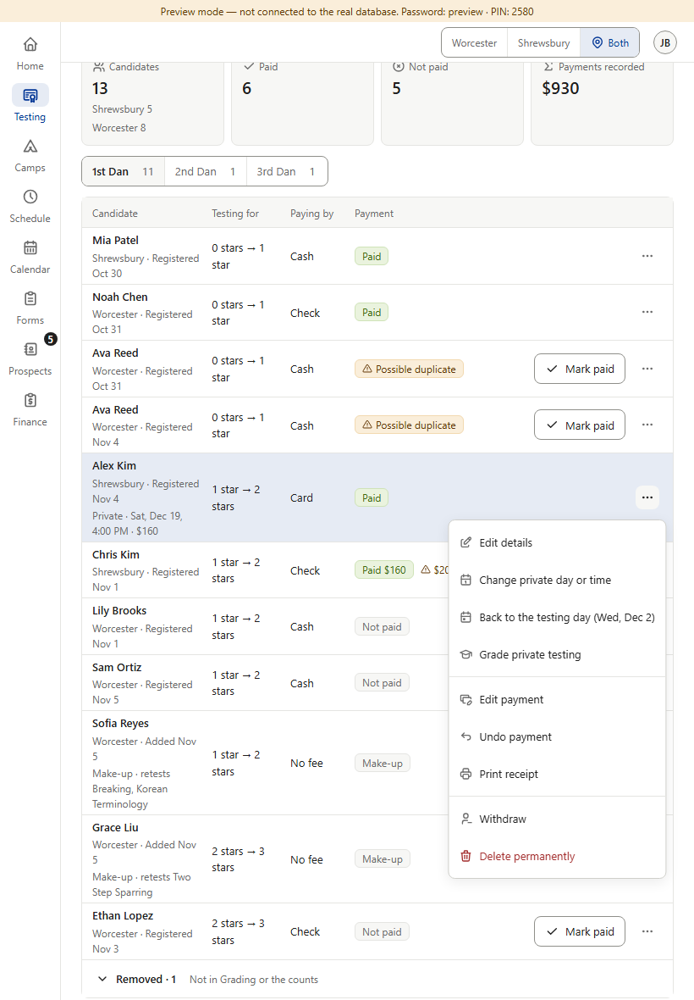
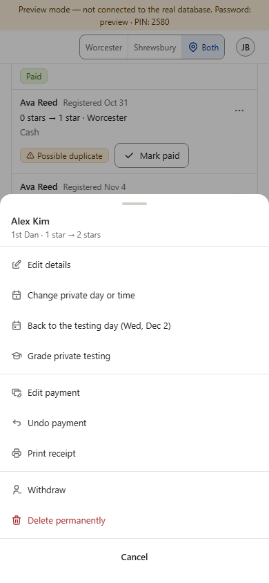
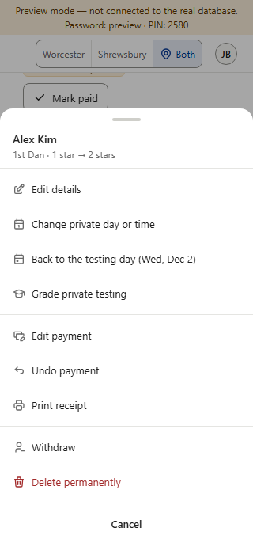

A candidate with a private testing (Alex Kim). “Change private day or time” gets the calendar icon (ti-calendar, as Color Belt’s “Change day or time” and Star’s own “Set private testing”); “Back to the testing day” gets the calendar-with-a-day icon (ti-calendar-event), so the Undo arrow means only Undo and Restore again (v1.048 (13)). Words, order and everything else in the menu stay the same.






